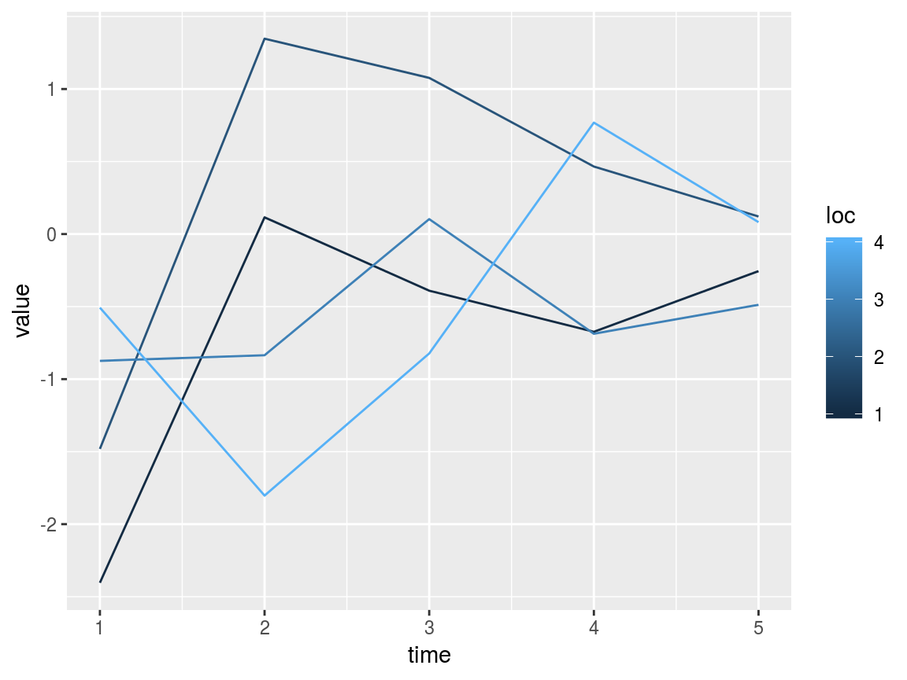
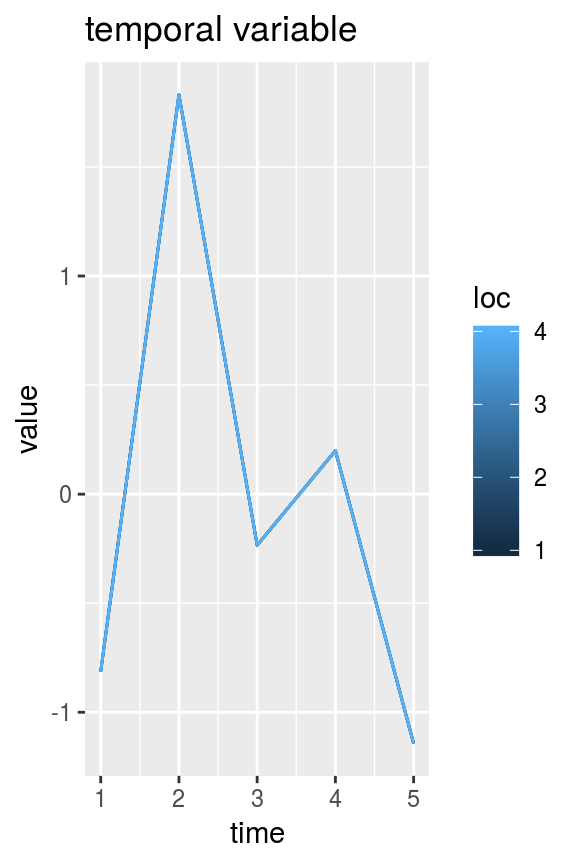
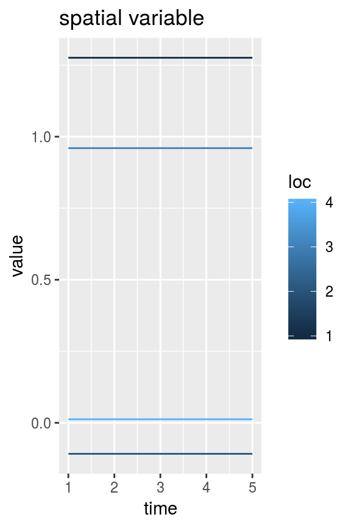
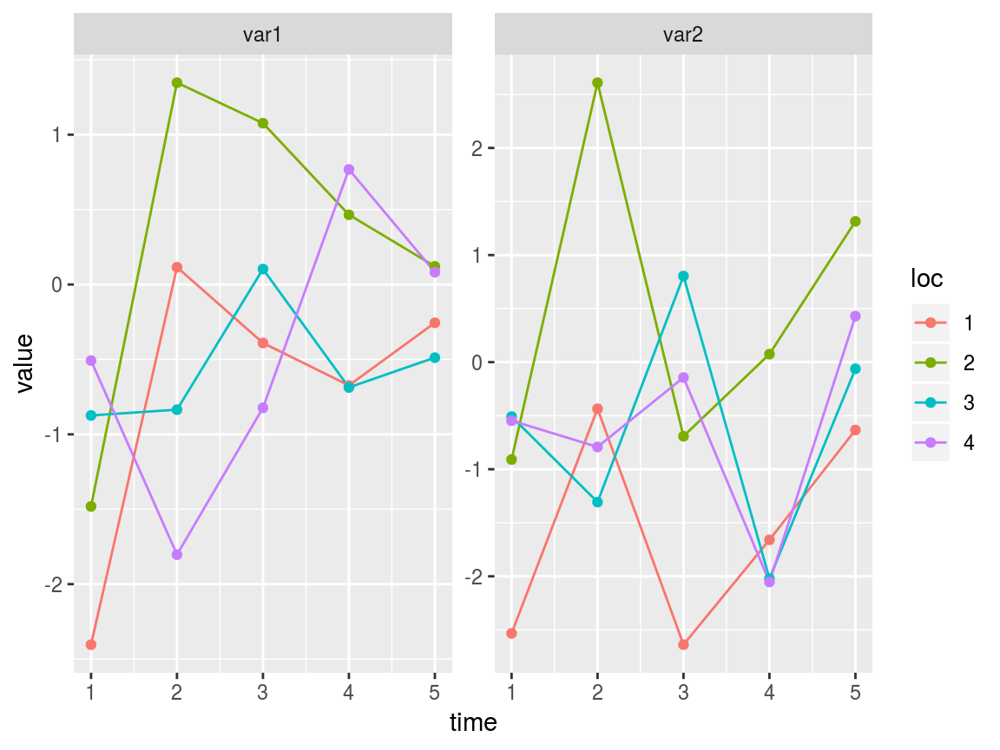

swotlists.RmdSWOT-like datasets contain variables defined at specific points in time and space. The Discharge Algorithm Working Group (DAWG) has adopted the convention of formatting such data as space-down, time-across matrices. I will refer to such a space-down, time-across matrix as a DAWG matrix. swotr contains a handy function for plotting DAWG matrices; that function is plot_DAWG. For example, we can generate a random DAWG matrix indexed in 4 locations and 5 times as follows:
library(dplyr)
#>
#> Attaching package: 'dplyr'
#> The following objects are masked from 'package:stats':
#>
#> filter, lag
#> The following objects are masked from 'package:base':
#>
#> intersect, setdiff, setequal, union
library(ggplot2)
library(swotr)
mat1 <- matrix(rnorm(20), nrow = 4, ncol = 5)
plot_DAWG(mat1)
Variables that vary only in time or only in space can be converted from vectors to DAWG matrices using the swot_vec2mat function. For example:
time_vec <- rnorm(5) # vector of a temporal variable
space_vec <- rnorm(4) # vector of a spatial variable
time_mat <- swot_vec2mat(time_vec, pattern = mat1) # mat1 is used as a pattern to get the matrix dimensions
space_mat <- swot_vec2mat(space_vec, pattern = mat1) # automatically determines which dimension is variable
plot_DAWG(time_mat) + ggtitle("temporal variable")
plot_DAWG(space_mat) + ggtitle("spatial variable")
Unfortunately, swot_vec2mat is too dumb to work if pattern has the same number of rows as columns.
A swotlist is essentially a named list of DAWG matrices. This is not a formal object class and is flexible as to what variables it contains. It’s just a kind of list that many swotr functions take as input. For example, the following is a perfectly valid swotlist.
list1 <- list(var1 = mat1, var2 = mat1 + rnorm(20))The swot_plot function plots all variables (or optionally a subset thereof) within a swotlist.
swot_plot(list1)
A swotlist is a compact, flexible, and easily accessible way of storing SWOT-like data. But it is limited in that it can only contain matrices with the same dimensions as one another. Thanks to easy matrix representation of vectors (via swot_vec2mat) swotlists can represent a surprising variety of variables.
Although there’s no requirement to what a swotlist can contain, some swotr functions (and other functions that may be added to swotr or released in a companion package in the future) expect certain DAWG matrices to be present.
Although a handy data format, swotlists are not perfect for using with many R utilities that expect data.frames and related “tidy” tabular data representations. (See the tidyverse for some examples of how tidiness has permeated the R ecosystem.) swotr has two functions for switching between swotlist representation and tidy representation of SWOT-like data. To turn a swotlist into a tidy data.frame, use swot_tidy.
tidydf1 <- swot_tidy(list1)
str(tidydf1)
#> 'data.frame': 20 obs. of 4 variables:
#> $ var1: num -1.758 0.295 1.694 0.906 -0.305 ...
#> $ var2: num -1.471 0.267 2.952 0.647 -2.013 ...
#> $ time: int 1 1 1 1 2 2 2 2 3 3 ...
#> $ loc : int 1 2 3 4 1 2 3 4 1 2 ...To go back to the original swotlist for, use swot_untidy.
str(swot_untidy(tidydf1))
#> List of 2
#> $ var1: num [1:4, 1:5] -1.758 0.295 1.694 0.906 -0.305 ...
#> $ var2: num [1:4, 1:5] -1.471 0.267 2.952 0.647 -2.013 ...swot_tidy is used under the hood for many of swotr’s plotting functions (and some other functions), since ggplot2 takes a data.frame as input.
swotr contains functions to make reading SWOT-like netcdf files easy. But in order to use these you’ll need to have the ncdf4 package installed. This in turn requires that you have the netcdf library installed on your computer.
The nc_list function reads all data from a netcdf file into a single list.
ncfile <- system.file("extdata", "SacramentoDownstream.nc", package = "swotr")
saclist1 <- nc_list(ncfile)
str(saclist1, nchar.max = 50)
#> List of 21
#> $ River_Info.Name : chr [1(1d)] ""
#> $ River_Info.QWBM : num [1(1d)] 377
#> $ River_Info.wc : num [1(1d)] 1.96
#> $ River_Info.rch_bnd: num [1:10(1d)] 0 6169 8407 13286 17303 ...
#> $ River_Info.gdrch : num [1:9(1d)] 1 2 3 4 5 6 7 8 9
#> $ XS_Timeseries.t : num [1:154(1d)] 733805 733806 733807 733808 733809 ...
#> $ XS_Timeseries.Z : num [1:93(1d)] 9.97e+36 9.97e+36 9.97e+36 9.97e+36 9.97e+36 ...
#> $ XS_Timeseries.X : num [1:93(1d)] 0 0.305 385.359 788.643 1186.071 ...
#> $ XS_Timeseries.W : num [1:93, 1:154] 87.2 87.2 94.3 87.2 87.4 ...
#> $ XS_Timeseries.Q : num [1:93, 1:154] 146 146 146 146 147 ...
#> $ XS_Timeseries.H : num [1:93, 1:154] 12.9 12.9 12.9 12.8 12.8 ...
#> $ XS_Timeseries.A : num [1:93, 1:154] 285 285 237 263 311 ...
#> $ XS_Timeseries.P : num [1:93, 1:154] NaN NaN NaN NaN NaN NaN NaN NaN NaN NaN ...
#> $ XS_Timeseries.n : num [1:93, 1:154] 0.035 0.035 0.035 0.035 0.035 0.035| __truncated__ ...
#> $ Reach_Timeseries.t: num [1:154(1d)] 733805 733806 733807 733808 733809 ...
#> $ Reach_Timeseries.W: num [1:9, 1:154] 87.1 95.7 86.7 82.2 88 ...
#> $ Reach_Timeseries.Q: num [1:9, 1:154] 147 148 150 152 154 ...
#> $ Reach_Timeseries.H: num [1:9, 1:154] 12.7 12.3 12 11.8 11.7 ...
#> $ Reach_Timeseries.S: num [1:9, 1:154] 7.71e-05 1.01e-04 4.99e-05 4.70e-05 4.62e-05 ...
#> $ Reach_Timeseries.A: num [1:9, 1:154] 275 290 322 339 355 ...
#> $ Reach_Timeseries.P: num [1:9, 1:154] NaN NaN NaN NaN NaN NaN NaN NaN NaN NaN ...Note that this is not a swotlist, as it contains elements that are not matrices, and it contains matrices that have differing numbers of rows (9 for reach data, 93 for cross-section data). But it contains all of the data in the netcdf should you need it.
Since the McFLI community works principally with reach-averaged data, a useful alternative to nc_list, nc_reach, is proviced. Unlike nc_list, nc_reach returns a swotlist of only reach-averaged quantities.
saclist2 <- nc_reach(ncfile)
str(saclist2, nchar.max = 50)
#> List of 9
#> $ W : num [1:9, 1:154] 87.1 95.7 86.7 82.2 88 ...
#> $ S : num [1:9, 1:154] 7.71e-05 1.01e-04 4.99e-05 4.70e-05 4.62e-05 ...
#> $ dA : num [1:9, 1:154] 0 0 0 0 0 ...
#> $ H : num [1:9, 1:154] 12.7 12.3 12 11.8 11.7 ...
#> $ t : num [1:9, 1:154] 14276 14276 14276 14276 14276 ...
#> $ x : num [1:9, 1:154] 3085 7288 10846 15294 18737 ...
#> $ reachid: int [1:9, 1:154] 1 2 3 4 5 6 7 8 9 1 ...
#> $ Q : num [1:9, 1:154] 147 148 150 152 154 ...
#> $ A : num [1:9, 1:154] 275 290 322 339 355 ...
#> - attr(*, "QWBM")= num 377Note that saclist2 also includes a QWBM attribute. This is to store the water balance model (WBM) estimate of discharge. Since this is a scalar, it would be extremely redundant to store as a DAWG matrix, but it is often useful to store with the other reach variables. Keeping it as an attribute means the object structure is not affected, and it is still a swotlist containing only DAWG matrices.
Since saclist2 is a swotlist, we can plot it as follows:
swot_plot(saclist2)To get a better detail of area, width, and slope, we can plot just those variables on a log axis as follows
swot_plot(saclist2, vars = c("A", "W", "S")) + scale_y_log10()An optional argument, good_only = TRUE can be passed to nc_reach; this will read in only reaches flagged as “good” in the netcdf file. Since all reaches are “good” in the Downstream Sacramento, this does not affect this particular case.
saclist2 <- nc_reach(ncfile, good_only = TRUE)In the above plot it appears there are 4 potentially anomalous slope values in reach 1. It would be helpful to look just at that location’s data to find out more. We can use the swot_sset function to subset an entire swotlist by time and/or location, and then run swot_plot on the subsetted result.
Indeed, we may want to remove those anomalous times. There are a couple of ways to do this. First, using swot_sset:
badtimes <- which(saclist2$S > 6e-4, arr.ind = TRUE)[, 2] # Get just the columns (times) with S > 6e-4
saclist3 <- swot_sset(saclist2, keeptimes = -badtimes) # Use minus sign to omit, rather than keep, badtimes
swot_plot(saclist3)And now the anomalous slopes are gone, as well as all other variables’ data from those 4 times.
If we thought the entire reach was bad we can removed 1 of 9 reaches instead of 4 of 154 times:
saclist4 <- swot_sset(saclist2, keeplocs = -1) # again, negative to keep everything except 1
swot_plot(saclist4)Now there are only 8 reaches, and the remaining reaches have been renumbered to replace the former reach 1.
Another way to do the same operations is to replace the anomalous values with NAs and use swot_purge_nas on the result.
saclist5 <- saclist2 # Make a copy before replacing values
saclist5$S[saclist5$S > 6e-4] <- NAIt may be perfectly fine to just keep the dataset with missing (NA) values, but some functions that expect complete data will not work. Purging of times or locations with NAs present is easy with swot_purge_nas:
saclist6 <- swot_purge_nas(saclist5, purge = "times") # Result is equivalent to saclist3
saclist7 <- swot_purge_nas(saclist5, purge = "locs") # Result is equivalent to saclist4swotr contains a few functions for working with partial cross-sectional area (dA) observations.
First, dA can be calculated from height and width observations via calcdA_vec (for single-location vectors) and calcdA_mat (for DAWG matrices). Note that the summation-as-integration method used by these functions is not robust to height and width measurement error and should be used with this imprecision in mind.
dAmat <- calcdA_mat(w = saclist2$W, h = saclist2$H)
plot_DAWG(dAmat)Since the zero reference of dA is arbitrary, swotr’s dA-related functions include an argument specifying where to set dA = 0. Options are “first” for the first observation in time (this is typically the default), “minimum” or “median”. Existing DAWG matrices of dA can have their zero point adjusted via rezero_dA.
The full cross-sectional area is obtained by adding dA to \(A_0\), the constant-in-time unobserved part of cross-sectional area. The value of \(A_0\) depends on where dA is referenced to zero. If a swotlist contains a cross-sectional area DAWG matrix called A, the true \(A_0\) vector can be obtained using the function realA0. This also has a zero argument, which should match the zero reference of the swotlist’s dA matrix.
realA0(saclist2, zero = "first")
#> [1] 275.2390 289.6668 321.8778 339.4254 355.2620 362.8751 474.6569 423.4927
#> [9] 451.1953The swotr package is designed to interface with the bamr package for estimation of flow-law parameters and discharge. To turn a swotlist into a bamdata object, use swot_bamdata:
library(bamr)
sacbd <- swot_bamdata(saclist3)
sac_est <- bam_estimate(sacbd, variant = "manning", iter = 2000)
bam_hydrograph(sac_est, qobs = saclist3$Q[1,])